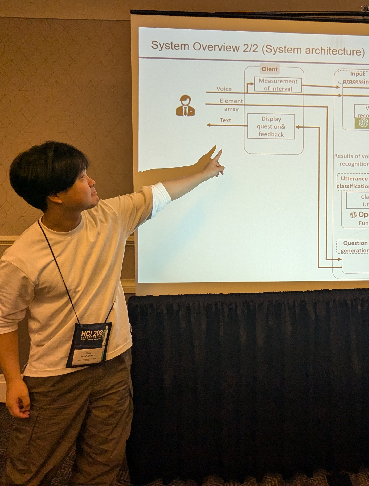
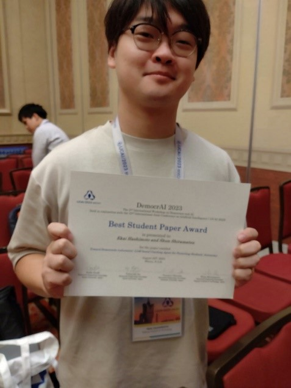
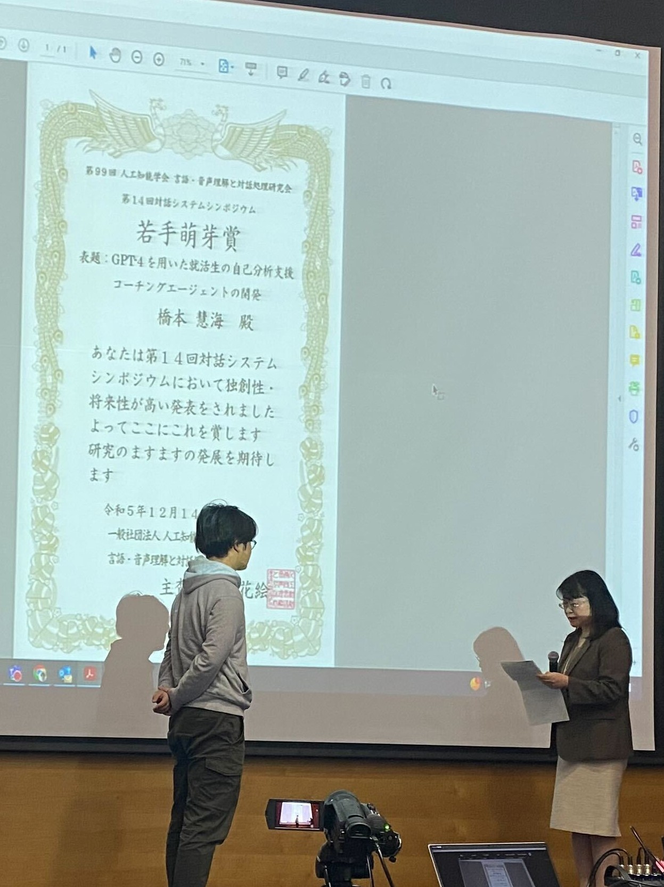

橋本 慧海 (HASHIMOTO Ekai)
名古屋工業大学SPRINGスカラシップ 研究学生 2025年4月～
Nagoya Institute of Technology SPRING Scholarship Awardee, From Apr.2025
名古屋工業大学大学院 情報工学専攻 博士後期課程（指導教員：白松俊 教授・長澤史記 助教）2025年4月～
Nagoya Institute of Technology, Graduate School of Engineering, Ph.D. Course, Expected to graduate in Mar.2028
名古屋工業大学大学院 創造工学プログラム 修士課程（指導教員：白松俊 教授） 2025年3月修了
ハイラブル株式会社にて研究インターン 2023年6月~10月
ハイラブル株式会社にて研究アルバイト 2023年4月~（継続中）
名古屋工業大学 創造工学教育課程 情報社会コース 2023年3月卒業
連絡先（Contacts）
- e-mail： e.hashimoto.611@stn.nitech.ac.jp
- 研究室URL： http://www.srmt.nitech.ac.jp/
作成システムへのアドレス
- 看護師面談支援システム：
https://dialog.test-srmt.com/ - 就活支援システム：
https://hsmtapp.ngrok.io/
研究経歴
{% include achievements.html %}


